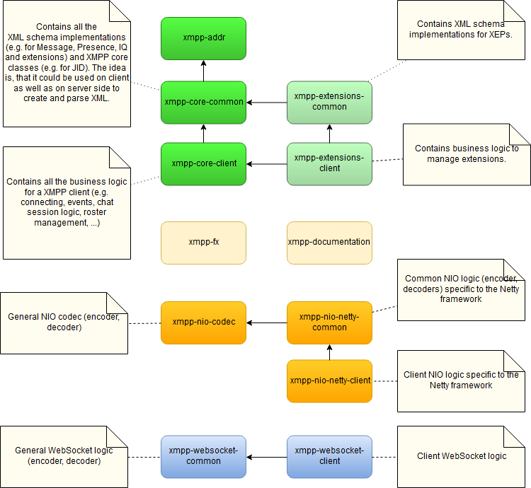

Build Instructions
Babbler uses Maven as build tool and is separated into a few modules.
Module Overview
Let's start with a short overview over the build structure. The project is structured into the following Maven modules:
- xmpp-addr: This is module for the XMPP Address Format (RFC 7622) and contains only the
Jidclass. Nonetheless it's a separate module, because a) it's a separate RFC as well and b) one could use theJidclass as standalone in other projects. - xmpp-core
- xmpp-core-common: This is the core module and resembles mainly the XMPP Core specification (RFC 6120). It
contains mainly only XML schema implementations, e.g. for Message, Presence, IQ and extensions. There's not much
logic involved here, its main purpose is to map between XML and Java objects.
The idea behind separating this module is, that it could theoretically be used by a client as well as a server implementation. - xmpp-core-client: This contains the core business logic used by a client, e.g. roster management, event handling, client authentication logic, etc.
- xmpp-core-common: This is the core module and resembles mainly the XMPP Core specification (RFC 6120). It
contains mainly only XML schema implementations, e.g. for Message, Presence, IQ and extensions. There's not much
logic involved here, its main purpose is to map between XML and Java objects.
- xmpp-extensions
- xmpp-extensions-common: This contains XML schema implementations of XEPs.
- xmpp-extensions-client: This contains client logic to manage extensions, e.g. business rules.
- xmpp-debug: A visual debugger implementation.
- xmpp-fx: A very small JavaFX project for UI development.
- xmpp-documentation: Contains this site.
- xmpp-sample: Contains sample code.
- xmpp-websocket
- xmpp-websocket-common: Common WebSocket logic
- xmpp-websocket-client: Client WebSocket logic
- xmpp-nio
- xmpp-nio-codec: Java NIO codec for XMPP
- xmpp-nio-netty
- xmpp-nio-netty-common: Common Netty implementation (Codec)
- xmpp-nio-netty-client: Client Netty implementation (Connection)

Building the Project
First you obviously need to get the source code. You can get it either by downloading the repository as zip package or cloning it via git. In order to build the project you need to run the following common Maven command on the root directory:
mvn clean package
Make sure you use Java 8.
This will build all the modules, run the tests and merge the core and client modules into one jar file (via the
maven-shade-plugin). You will find everything you need in the target folder of the xmpp-documentation module. The
assembled jar file is called “babbler-{version}.jar”.
Generating the Documentation
mvn clean site
This will generate this documentation and the JavaDoc. You will find it in xmpp-documentation/target/site.